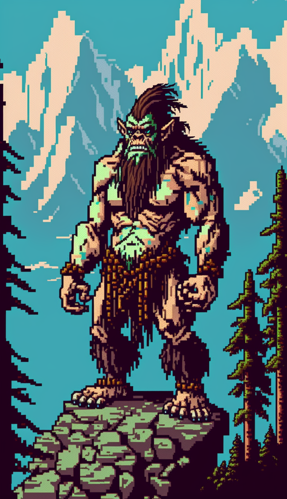
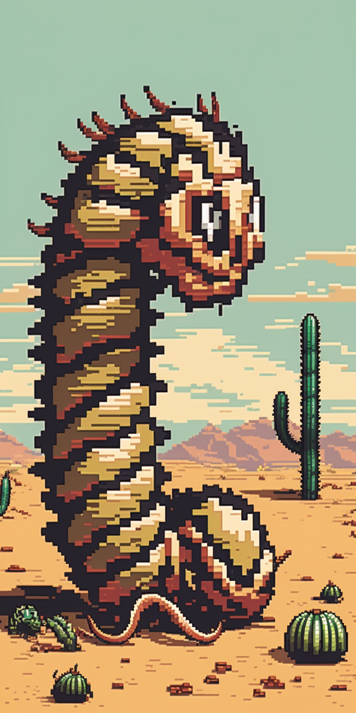
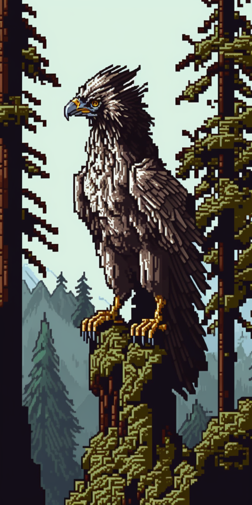

Guidebook: Creatures
Air Elemental
Air elementals are creatures of living air and wind, formed from the very essence of the Elemental Plane of Air. They appear as roiling masses of whirling air, with no discernible head or limbs. Despite their seemingly insubstantial form, air elementals are surprisingly strong, and their ability to move at incredible speeds makes them difficult to pin down. They are immune to non-magical weapons, as well as many elemental and environmental hazards such as poison, disease, and even drowning. Air elementals are known for their ability to control the winds and manipulate the air around them, which they can use to lift and carry objects or creatures, create powerful gusts of wind, or even create deadly tornadoes. They are typically neutral in alignment, and are often called upon by spellcasters to assist in transportation or battle.
Algea Crab
The algae crab is a large, crab-like creature with a tough, armored exoskeleton. Its back is covered in a thick layer of algae, giving it a greenish-brown coloration that allows it to blend in with the surrounding environment. Despite its large size, the algae crab is surprisingly agile and can move quickly both on land and in the water. This creature is known for its temperamental nature, and it can be difficult to predict its behavior. It is usually docile and will try to avoid confrontation, burrowing under mud or sand to disguise itself as a harmless rock. However, when provoked or threatened, the algae crab becomes aggressive and will lash out with its sharp claws. The algae crab is primarily a scavenger, feeding on dead fish and other marine creatures that wash up on shore. However, it is also known to attack small fish and other creatures that wander too close to its hiding place. It is a prized catch for fishermen, as its meat is considered a delicacy in many coastal communities.
Angel
Angels are powerful celestial beings that serve a deity and embody goodness, mercy, and justice. They often appear as beautiful and radiant humanoid figures with wings made of pure light. Angels stand taller than humans, with an average height of 7-8 feet. They possess a strong and muscular build, with chiseled features and flawless skin. Their hair can be any color, but is often white or gold and radiates a heavenly glow. TTheir clothing is simple yet elegant, consisting of flowing robes or tunics made from pure white cloth, often adorned with gold or silver embroidery. They carry themselves with grace and poise, exuding a sense of calm and serenity. Angels are known for their incredible strength and speed, as well as their ability to channel divine power through their attacks. They are also known for their healing abilities and can use their powers to restore life and vitality to wounded creatures. In addition, they are often immune to certain types of damage and can resist magic spells that target the mind or emotions. Angels are typically associated with lawful good deities and are seen as powerful protectors and defenders of the innocent.
Azure Frog
The Azure Frog is a small, poisonous amphibian that inhabits the dense jungles and damp forests of the realm. Its skin is a vibrant shade of blue, marked with yellow spots. Its eyes are large and round, a striking shade of golden yellow. Despite its small size, the bright blue frog is one of the most venomous creatures in the land, and its toxins can cause paralysis or even death to those unlucky enough to come into contact with its skin. Because of this, it is feared and avoided by most travelers and adventurers. However, some alchemists and poisoners are known to seek out the bright blue frog in order to extract its deadly venom for use in their craft.
Bandit Racoon

The Bandit Raccoon is a furry, nocturnal mammal that lives in the forests and woodlands of Avaria. It has a pointed snout, a mask of black fur around its eyes, and a bushy ringed tail. Its body is covered in gray fur with black stripes, and it has small, sharp claws for climbing trees and grabbing food. Bandit Raccoons are known for their intelligence and dexterity, often using their nimble paws to steal food and shiny objects from unsuspecting travelers. They are also skilled at breaking into food storage containers and are notorious for raiding garbage cans in human settlements. Despite their reputation as mischievous thieves, some have Bandit Raccoons as pets who can assist travelers on their journeys, leading them to sources of food and shelter in the wilderness. While Bandit Raccoons are generally peaceful creatures, they will defend themselves if threatened. They have sharp teeth and can deliver a painful bite if provoked. They are also known to hiss and growl as a warning to potential predators.
Beholder
A Beholder is a legendary creature that is a horrifying sight to behold. It is a large orb-shaped monster with one central eye, and horns protruding from the top of its body. The eye of a Beholder is the most powerful, as it can shoot a deadly beam of energy that can obliterate almost anything in its path. The Beholder's body is covered in thick, leathery skin that is nearly impervious to physical damage. Beholders are highly intelligent, and they are often found living in underground lairs or deep within dungeons. They are highly territorial and will attack anything that threatens their domain. They are also known for their cruel and sadistic nature, and will often torment their victims with their magical powers before killing them. Despite their fearsome reputation, Beholders can be valuable allies to those who earn their respect. They are highly knowledgeable about magic and can be persuaded to share their knowledge with those who prove themselves worthy. However, crossing a Beholder is never a wise move, as they are among the most dangerous and powerful creatures in the realm.
Bluebrownie
Bluebrownies are small, graceful creatures with sleek bodies and delicate wings. They have a mix of brown and blue feathers, with the blue appearing in patches on their wings and tail. Their beaks are small and pointed, perfect for plucking insects out of the air, and their eyes are large and bright. They are known for their sweet, melodic songs, which are said to have a calming effect on those who hear them. Bluebrownies are found in forests and woodlands, where they flit through the trees in search of food and nesting sites. They are social creatures and often travel in flocks, communicating with each other through a complex series of chirps and whistles. Despite their small size, they are fiercely protective of their young and will attack any creature that threatens them. In addition to their beautiful songs, Bluebrownies are also known for their ability to mimic other sounds they hear in their environment, such as the chirping of other birds or the rustling of leaves. This ability has led some to believe that they possess a certain level of intelligence and may even be capable of learning simple commands if trained properly.
Bluegaze Bass
The Bluegaze Bass is a common sight in freshwater lakes and rivers, easily identifiable by its bright blue scales and striking yellow eyes. Growing to a length of about a foot, they have a streamlined body shape with a slightly pointed snout and sharp dorsal fin. Their scales shimmer in the light, giving them an almost magical appearance as they dart through the water. They are agile swimmers, able to quickly change direction with powerful flicks of their tail. Despite their beauty, Bluegaze Bass are known for their voracious appetite and will often feed on smaller fish and insects. They are highly sought after by anglers for their fighting spirit and delicious meat. In the wild, Bluegaze Bass are often found in schools, swimming together in synchronized patterns. However, they can also be successfully raised in captivity, making them a popular choice for aquaculture.
Blood Fox
Blood Foxes are a rare and elusive species of fox that inhabit the forests and mountains. They are known for their distinctive red fur, which is said to be as red as fresh blood. These foxes are typically large with sharp fangs and claws that they use to hunt their prey. Blood Foxes are incredibly fast and agile, able to dart through the forest with ease. They are also extremely intelligent and cunning, often using trickery and deception to catch their prey or avoid danger. In addition, they possess a keen sense of smell and excellent hearing, making them difficult to surprise. Legends say that Blood Foxes are not just ordinary animals, but rather are creatures of magic and mysticism. Some even claim that they have the power to control blood and manipulate the life force of other creatures. Whether or not these claims are true, the Blood Fox remains a mysterious and fascinating creature.
Cattle-Horse

The Cattle-Horse is a peculiar creature that stands at an average of 6 feet tall and 9 feet long, with a robust and muscular build. Its head is that of a horse, complete with two sharp horns on either side, but its body resembles that of a cow. The creature has a short, smooth coat of fur that comes in a range of colors from black to brown to white. The Cattle-Horse is prized by many farmers and ranchers for its versatility as both a milk and meat producer, as well as for its ability to be ridden. Its hooves are strong and agile, allowing it to navigate rough terrain with ease, and its thick hide provides a natural defense against predators.However, the Cattle-Horse is known for its stubbornness, making it difficult to train and handle at times. It requires a patient and experienced handler to gain its trust and respect. Despite this, many find the Cattle-Horse to be a valuable asset to their homestead and an impressive sight to behold.
Chatterbeak

The Chatterbeak is a unique and highly intelligent parrot-like creature that is highly sought after by adventurers and scholars alike. They have vibrant plumage, ranging from brilliant blue and green to deep red and gold, and their wingspan can reach up to three feet. Their most distinctive feature, however, is their beak, which is capable of a wide range of vocalizations and sounds, including mimicry of human speech. In addition to their impressive vocal abilities, Chatterbeaks are also able to use their beaks to manipulate objects with incredible precision. They can use tools, such as keys or picks, with ease and are even known to solve puzzles and open locks. They are highly social creatures and are often kept as companions by those lucky enough to capture them. While not naturally aggressive, Chatterbeaks have been known to defend themselves fiercely if threatened or if their owner is in danger. They have sharp talons and a powerful bite, and are capable of flying at high speeds to escape danger or pursue prey. Due to their rare and valuable abilities, Chatterbeaks are often targeted by collectors and smugglers. They are also highly valued by alchemists, who use their feathers and beaks in a variety of magical potions and elixirs.
Coastal Penguin
The Coastal Penguin is a flightless bird found near the coastlines of warmer regions. It stands about two and a half feet tall and has a stocky build with black and white feathers. Its wings are small and are used for swimming rather than flight. The Coastal Penguin is an expert swimmer and can stay underwater for several minutes at a time. Coastal Penguins primarily feed on fish, squid, and krill, which they catch by diving underwater. They form large colonies during breeding season, and males and females work together to care for their young. Coastal Penguins are docile creatures and are easily hunted.
Common Horse
The Common Horse is a domesticated equine species that has been bred by humans for centuries for transportation, work, and sport. They come in various breeds and sizes, with coats ranging from black, brown, gray, chestnut, and even white. They typically stand between four and five and a half feet tall at the shoulder and weigh around 1,000 pounds. Common Horses are social animals and are often kept in herds, with a hierarchy led by a dominant mare. They are herbivores and eat mainly grass, hay, and grains. They are also very strong and can carry riders or pull heavy loads with ease. They have a calm and gentle disposition, which makes them easy to train and handle. In combat, Common Horses are not typically used as weapons, but rather as mounts for knights and other warriors. They are able to gallop quickly and maneuver with agility, making them ideal for cavalry charges or quick escapes. Common Horses are often trained for various disciplines, such as dressage, jumping, racing, and rodeo events.
Crimson Shark

The Crimson Shark is a ferocious freshwater predator found in lakes and rivers. It can grow up to 16 feet long and is known to be an apex predator in its habitat. It is a large shark with a body that is covered in deep crimson red scales that shimmer in the light like polished rubies, giving it its name. Its sharp teeth are jagged and serrated, and its jaws are powerful enough to crush bone. With its powerful jaws and razor-sharp teeth, it can easily take down fish and even small boats that wander into its territory. The Crimson Shark is known for its aggressive behavior and its willingness to attack anything that crosses its path. It can move through the water with incredible speed, making it a formidable opponent for even the most experienced sailors. Many legends speak of sailors who have encountered this beast and barely lived to tell the tale.
Demon
Demons are chaotic evil creatures that hail from the Abyss, a plane of existence that is both deadly and unpredictable. Demons vary greatly in appearance and abilities, but they are all malevolent beings that delight in causing pain, destruction, and chaos. Most Demons have a humanoid form, while others have more monstrous or animalistic shapes. All Demons however share certain characteristics such as razor-sharp claws, teeth, and horns. They also possess a variety of supernatural abilities such as telekinesis, teleportation, and the ability to summon other demons to do their bidding. Demons are known to be incredibly powerful, and most mortals are ill-equipped to face them in battle. They are often summoned to the Material Plane by evil wizards or cultists, who seek to harness their dark powers for their own nefarious purposes. Encountering a demon is a daunting prospect for any adventurer, and those who do so would be wise to prepare themselves for a battle like no other.
Desert Ghoul
The Desert Ghoul is a horrifying undead creature that aimlessly roams the arid wastelands. Its skin is taut and shriveled, clinging tightly to its bones, and its eyes glow with an otherworldly, malevolent light. It has razor-sharp claws and teeth, and its hair and nails have grown long and jagged, adding to its grotesque appearance. It typically wears little protection but sometimes has crudely made armor made from desert bushes. Its presence is often marked by a pungent stench of decay that can be detected from a distance. Desert Ghouls are known to be vicious and unpredictable, attacking anything that moves in their territory. They can move with unnatural speed and agility, and can even phase through solid objects, making them difficult to evade or trap.
Dire Bear
The Dire Bear is a massive, ferocious bear that can grow up to 12 feet tall on its hind legs and weigh over a ton. Covered in shaggy fur that can range from brown to black, the Dire Bear's paws are massive with razor-sharp claws that can easily tear through flesh and bone. Its size and strength make it difficult to take down, and it can often be found living in isolated areas such as caves or deep in the mountains. The Dire Bear is a solitary creature, preferring to live in remote areas of the wilderness where it can hunt and roam without interference. However, during the mating season, males will sometimes compete for the attention of females, leading to violent clashes that can be heard for miles. Though fearsome and intimidating, the Dire Bear is not without its weaknesses. It is vulnerable to fire and can be easily provoked by loud noises or sudden movements. It also has poor eyesight, relying primarily on its sense of smell to locate prey. Some druids are known to keep Dire Bears as loyal animal companions due to their raw power and fighting ability.
Dire Wolf
The Dire Wolf is a massive predator that roams the wilds in packs, feared by all who venture too close. The Dire Wolf stands over 5 feet tall at the shoulder and can weigh over 600 pounds. Its thick, shaggy fur ranges in color from dark gray to black, with piercing yellow eyes that seem to glow in the dark. The Dire Wolf's massive jaws are lined with razor-sharp teeth, able to crush bone with ease. Its powerful legs are built for speed and strength, enabling it to take down prey many times its size. It moves with a fluid grace, often running for miles without stopping. As a pack hunter, the Dire Wolf is highly intelligent and fiercely loyal to its own kind. It communicates through growls, barks, and body language, and uses sophisticated tactics to bring down its prey. It is a formidable foe for any adventurer who crosses its path, and only the bravest and most skilled warriors can hope to survive an encounter with a pack of these deadly predators.
Earth Elemental
Earth Elementals are powerful creatures made entirely of earth and stone. They are massive, towering over most humanoids at a height of 12 feet or more. Their bodies are composed of soil, rocks, and crystals, held together by powerful magic. They have no distinguishable features, but their glowing eyes reveal a consciousness and a fierce determination. Earth Elementals are known for their incredible strength and durability. They are able to withstand tremendous amounts of physical damage and can easily shrug off most magical attacks. They are able to move through solid earth as easily as humans move through air, and can even tunnel through solid rock. They are also able to cause earthquakes and landslides by slamming their massive bodies into the ground. Earth Elementals are generally neutral creatures, uninterested in the affairs of mortals. However, they can be summoned by powerful mages to serve as guardians or to aid in construction projects. When provoked, they can be dangerous opponents, unleashing powerful attacks that can reduce buildings to rubble and crush even the strongest warriors.
Electric Eel

The Electric Eel is a powerful creature that dwells in freshwater rivers and lakes. This eel possesses a magical ability to generate and manipulate electricity. Its skin is a metallic teal, shimmering and almost reflective in the light, and it has a long, streamlined body that can grow up to 4 feet in length. The Electric Eel is a highly aggressive predator, and its electrical abilities make it a formidable opponent. It uses its electricity to stun or kill prey, and can even use it to defend itself from predators. Its eyes are small and glow yellow, but its mouth is large and lined with sharp, needle-like teeth that it uses to capture and devour its prey. Although primarily solitary creatures, Electric Eels will gather in large groups during the mating season. During this time, males will engage in elaborate displays to attract females, which can include flashing their electric lights and creating powerful electric fields. Electric Eels are highly prized by magic-users for their ability to generate electricity. Their flesh is also considered a delicacy in some groups, though it is highly dangerous to consume without proper preparation.
Emerald Puffer

The name of the creature is "Emerald Puffer". The Emerald Puffer is a small, freshwater fish with a distinctive round body that can inflate when threatened. Its emerald green scales have a shimmering effect under the water, making it a prized possession among collectors. It has small, sharp teeth and powerful jaws that can crack open snails and other small aquatic creatures. In addition to its defensive capabilities, the Emerald Puffer also possesses a unique ability to produce a potent toxin in its skin. This toxin can be used as a powerful venom or as a natural defense against predators. The Emerald Puffer is known to be an aggressive and territorial creature, fiercely defending its territory and food sources from other fish. Due to their vibrant color and unique abilities, the Emerald Puffer is highly sought after by alchemists and magic-users for use in various potions and spells. However, they can be difficult to catch and transport, as they are known to be extremely sensitive to changes in water quality and temperature.
Field Bison
The Field Bison is a massive and powerful creature, standing at an average height of 6 feet at the shoulder and weighing up to 2,000 pounds. Their thick, yellow fur is well adapted to the harsh environments of the plains, and they possess a sturdy build that allows them to charge at high speeds and withstand the most brutal of attacks. Despite their formidable size and strength, Field Bison populations have been declining in recent years due to hunting. As a result, these majestic creatures are not as common as they used to be, and their presence is often seen as a sign of good fortune and prosperity. In the wild, Field Bison typically travel in small herds led by a dominant bull, and they graze on grasses and other vegetation. They have been known to defend their young and their territory fiercely, and their charges can be deadly to those who stand in their way. Due to their massive size, Field Bison have become a valuable resource for those who can capture or hunt them, as their meat and hides are highly sought after.
Fire Dragon
The Fire Dragon is a large, fearsome dragon that is known for its affinity for flames and its ability to breathe fire. It stands at least 20 feet tall at the shoulder, with long, sinuous muscles that ripple beneath its scaly hide. Its scales are a brilliant red-orange and dark ash color, and they are as hard as steel. Its wings are leathery and bat-like, with a wingspan of over 50 feet. The Fire Dragon's eyes are a bright, fiery yellow, and its pupils are slitted like those of a cat. Its head is adorned with long, curved horns that gleam in the light, and its teeth are razor sharp. It is a fierce predator, preying on animals, humans, or even towns it may desire to devour. As its name suggests, the Fire Dragon can breathe streams of searing flames that can melt steel and turn stone to ash. It can also manipulate flames, conjuring up walls of fire to block its enemies or hurling balls of fire like a siege weapon. Its scales are naturally fire-resistant, making it all the more dangerous in battle. Though they are fearsome creatures, Fire Dragons are not without their weaknesses. They are vulnerable to cold and water, and will avoid these elements whenever possible.
Fire Elemental

A Fire Elemental is a creature made entirely of living flames, originating from the Elemental Plane of Fire. They appear as humanoid figures made of flames that flicker and dance, with a vaguely defined head, arms, and legs. Their size can vary greatly, with some small enough to fit in a lantern, and others towering over buildings. Fire Elementals are beings of pure destruction and chaos, leaving a trail of scorched earth in their wake. They can ignite anything they touch, and their flames can quickly spread out of control, making them incredibly dangerous to encounter. They are immune to fire and heat-based attacks, and can even heal themselves by absorbing flames from other sources. When summoned to the Material Plane, Fire Elementals are often bound to a specific task, such as protecting a powerful artifact or guarding a location. They can also be used as a weapon, with their fiery attacks capable of melting metal and incinerating flesh. Due to their elemental nature, Fire Elementals are often unpredictable and difficult to control. They are most commonly encountered in areas of extreme heat, such as active volcanoes or blazing deserts. Adventurers seeking to defeat a Fire Elemental must be well-prepared with fire-resistant equipment and powerful magical spells.
Fire Falcon
The Fire-Falcon is a majestic bird of prey that appears to be made partially of flames. It stands just under two feet tall and has a wingspan of up to four feet, with feathers that blaze with bright oranges, yellows, and reds, adn mild blues and purples. Its eyes are a piercing gold, and it has sharp talons. The Fire-Falcon is known for its ability to use powerful fire magic, which it can manipulate to devastating effect. It can create blasts of searing heat and flames, which it uses to hunt prey or defend itself against threats. It can also summon small fireballs, which it hurls at enemies from a distance. Despite its fearsome appearance and abilities, the Fire-Falcon is not aggressive by nature and generally avoids conflict unless provoked. It is a solitary creature and prefers to make its home in warm, dry environments such as deserts. Its feathers are highly valued by spellcasters and alchemists for their magical properties, making the Fire-Falcon a coveted prize for those brave enough to seek it out.
Flameskull

The Flameskull is a fearsome undead creature that resembles a floating skull wreathed in flames. Its empty eye sockets glow with an eerie red light, and its bony jaw is fixed in a permanent grin. The flames that engulf its head are said to be fueled by its malevolent spirit, and it uses its fiery breath as a weapon to scorch its enemies. Despite being a creature of death and destruction, the Flameskull is highly intelligent and cunning. It is able to cast a variety of spells, such as fireball and flame strike, to incinerate its foes from afar. It can also communicate telepathically with other creatures, making it a formidable foe on the battlefield. The origins of the Flameskull are shrouded in mystery, but many believe it to be the result of dark magic or cursed artifacts. Some even claim that they are the vengeful spirits of powerful sorcerers who sought to cheat death and gained immortality at a terrible price. Regardless of their origins, Flameskulls are not to be taken lightly. Their fiery attacks can easily overwhelm even the most stalwart of adventurers, and their telepathic communication makes them an unpredictable foe. Only the bravest and most skilled of heroes dare to face them in battle.
Floral Deer
The Floral Deer is a beautiful and enchanting creature that roams the forests and meadows, with a coat of soft lavender fur and strong yet graceful antlers. They have large, gentle eyes that seem to glow with a faint magic, and their hooves are adorned with tiny flowers that seem to bloom wherever they step. The Floral Deer is a common sight in the lush forests and meadows of the realm. They are highly valued for their meat, which is tender and flavorful, and their hides, which are soft and durable. As a result, they are one of the most commonly hunted animals in the region. Despite their abundance, they are still highly regarded and respected by the locals for their beauty and importance to the ecosystem.
Floral Horse
The Floral Horse is a stunning creature with a long, flowing mane and coat in various shades of pink, purple, blue, or yellow. They stand taller than the average horse, and their legs are long and slender, allowing them to move with incredible speed and agility. Their eyes are a rich dark brown, and they have delicate, pointed ears that twitch at the slightest sound. These horses are incredibly rare and difficult to breed, making them highly prized by those lucky enough to possess one. They are only found in the most lush and beautiful meadows, and they are elusive and difficult to capture. They have a skittish nature and are easily spooked, but with proper training, they can become incredibly loyal and affectionate companions. The Floral Horse possesses a magical quality that makes them coveted by those who seek their abilities. They are incredibly fast, able to outrun even the swiftest of predators, and they have a natural grace that allows them to navigate even the most treacherous terrain. Their hooves are imbued with a subtle magic that allows them to move silently and with incredible precision, making them ideal for stealthy missions or espionage. The Floral Horse is highly sought after by those who value speed and beauty, and their rarity makes them a symbol of prestige and status. They are often used by wealthy merchants, royalty, and adventurers, who recognize their unique abilities and appreciate their beauty and grace. Despite their high value, they are also highly respected and admired by those who simply appreciate the natural world and the creatures that inhabit it.
Gargoyle

Gargoyles are monstrous creatures that are often used to decorate gothic architecture. They stand about seven feet tall and resemble humanoid figures with bat-like wings, a snarling face, and sharp talons. Their skin is made of rough stone that blends in with the architecture around them, allowing them to blend in and remain hidden until they strike. Gargoyles are fiercely territorial creatures and will attack anyone who enters their territory without permission. They are also highly intelligent and can speak Common and sometimes other languages. Gargoyles are known for their ability to manipulate stone and can meld into stonework to remain hidden or move quickly through architecture. In combat, gargoyles are formidable opponents, able to use their sharp talons and teeth to deal massive damage. They are also resistant to many forms of magic and can even turn invisible when necessary. Gargoyles are often used as guardians of ancient ruins or other valuable treasures, making them a common sight in dungeons and other dangerous locations.
Ghost
Ghost is a type of undead creature that is often associated with haunting and apparitions. They are typically the spirits of deceased beings that are trapped in the material realm due to unfinished business or trauma in their past life. Ghosts usually appear as ethereal, translucent beings, often shrouded in a white or gray mist. In combat, Ghosts are known for their ability to phase through solid objects and their ability to deal necrotic damage to living beings. They are also immune to many forms of physical damage, as they are already dead. While not particularly physically strong, some Ghosts can be quite powerful in other ways, possessing the ability to charm or manipulate the minds of living creatures. As neutral creatures, Ghosts are not inherently evil or malicious, though some may be driven by strong emotions such as vengeance or despair. They are often associated with haunted places, and can be encountered in graveyards, abandoned buildings, and other places where the veil between the living and the dead is thin. Some Ghosts may also be tied to specific objects or locations, and can be laid to rest by fulfilling their unfinished business or breaking the curse that binds them. Despite their eerie nature, some Ghosts can be quite charismatic and may be able to communicate with living beings through telepathy or other supernatural means. They can sometimes serve as helpful guides or sources of information, though caution is always advised when dealing with the dead.
Ghoul
Ghouls are undead creatures that are often depicted as ravenous, flesh-eating monsters. They were once living creatures, but were transformed into undead monsters through dark magic or necromancy. Ghouls are often found in dark and abandoned places, such as graveyards or crypts, where they skulk and hunt for their next meal.Physically, ghouls are typically depicted as emaciated and haggard, with pale, decaying skin and sharp, yellowed teeth. They have a powerful sense of smell and can detect living creatures from great distances. In combat, ghouls use their sharp claws and teeth to rend and tear at their prey, often attacking in packs to overwhelm their victims. Ghouls are notoriously difficult to kill, as they possess a degree of resilience to both physical and magical attacks. They are particularly vulnerable to fire and radiant damage, however, and can be repelled by holy symbols and other sacred objects. While ghouls are often depicted as mindless beasts, some are able to retain a degree of intelligence and cunning, using their charismatic wiles to lure in unsuspecting victims. These more intelligent ghouls are particularly dangerous, as they are capable of forming alliances with other undead creatures or even living beings to further their own goals.
Giant
Giants are massive humanoids found exclusively in mountainous regions. They tower over even the tallest of humans, standing up to twenty feet tall, and are incredibly strong and durable. Their skin is tough and thick, often covered in rough hair or scales, and their limbs are thick and muscular. Their eyes are usually small and deep-set, and their noses are large and crooked. Giants tend to be solitary creatures, and while some may have small family groups, they generally prefer to live alone in isolated mountain valleys or high peaks. They are semi-sentient, capable of rudimentary communication, but lack the intellectual capacity for complex speech or higher reasoning. Despite this, they possess a certain degree of cunning and ingenuity, and are capable of crafting simple tools and weapons out of stone, bone, or wood. Giants are known for their immense strength and endurance, and are incredibly skilled climbers and hikers. They are also known for their ferocity in battle, often wielding massive clubs or boulders as weapons. While they generally avoid conflict, they will fiercely defend their territories and homes if threatened.
Giant Butterfly
The Giant Butterfly is a majestic creature with iridescent wings that span several feet, and are large enough to be ridden. Its wings are a dazzling display of colors, ranging from deep blues and purples to bright pinks and yellows. Its body is slender and delicate, and it moves gracefully through the air. The Giant Butterfly is a herbivore, and its diet consists of nectar from flowers. While they lack any sort of defensive capabilities, they are known for their graceful movements and their ability to bring joy to those who observe them. The Giant Butterfly is a rare sight in most areas, and is often sought after by collectors for its beauty and rarity.They are also highly sought after by alchemists for their magical properties in their wings. It is sometimes considered a symbol of good luck and prosperity, and is revered by some as a sacred creature.
Giant Eagle
The Giant Eagle is a majestic avian predator that soars high above the clouds with its incredibley massive wingspan. Its feathers are a mixture of brown and white, with piercing yellow eyes that can spot prey from great distances. Their talons are razor-sharp and powerful, perfect for catching and carrying off prey as large as a horse. Despite their size, they are nimble and swift, capable of making tight turns and sudden dives. Giant eagles are highly intelligent creatures and have been known to bond with adventurers, serving as loyal and formidable mounts. They have even been known to assist in battles, using their sharp talons and powerful beaks to attack enemies. Their feathers are also highly sought after by alchemists for their magical properties, often used in the creation of potions and enchanted items. Giant eagles typically reside in mountainous regions and build their nests high up on cliffs or in tall trees. They are known to be fiercely territorial and will defend their nests and young at all costs. Despite this, they are generally peaceful creatures and will only attack if provoked or threatened.
Giant Forest Spider
The Giant Forest Spider is a monstrous creature that inhabits the depths of dense forests. These spiders are about the size of a Yeti Ox, with long, hairy legs that allow them to move with incredible speed and agility. They have eight eyes, each with excellent vision and can sense the slightest movement in their vicinity. Their web is incredibly sticky and strong, and they spin it to catch prey. They can catch even a man in their web, rendering them helpless. Once their prey is caught, they use their sharp fangs to inject venom that can paralyze and ultimately kill their victim. The Giant Forest Spider is a solitary creature and prefers to hunt alone, but they have been known to cooperate with other spiders of their kind to take down larger prey. They are incredibly adaptable and can even modify their web to trap specific types of prey. Encountering a Giant Forest Spider is a frightening experience, and it's wise to steer clear of their webs. However, their silk is incredibly valuable, and alchemists and wizards alike are willing to pay a high price for it due to its magical properties.
Giant Sand Worm
The Giant Sand Worm is a massive, burrowing creature that lives beneath the hot desert sands. These worms can grow up to 30 feet long and several feet in diameter, with tough, scaly skin that is difficult to penetrate. Their sharp teeth and powerful jaws can easily crush even the strongest of prey, and their sheer size and strength make them a formidable opponent. Giant Sand Worms are solitary creatures that spend most of their lives burrowed deep beneath the desert sands, waiting for prey to cross their path. When they do sense prey nearby, they burst forth from the sand, creating a massive wave of dust and sand that can bury or knock down anything in its path. Their sharp senses allow them to detect even the slightest movements or vibrations in the sand, making them extremely difficult to avoid if their den location is unkown. Because of their massive size and strength, Giant Sand Worms are highly prized by hunters and adventurers alike. Their tough, scaly skin can be used to create armor, while their powerful jaws and teeth can be fashioned into weapons. However, hunting these creatures is extremely dangerous, as they are known to be incredibly aggressive and territorial, attacking anything that enters their territory.
Giant White Hawk
The Giant White Hawk is a majestic bird of prey that soars high above the land with a wingspan of up to 12 feet. Its feathers are pristine white, with the tips of its wings and tail feathers edged in a pale blue hue. Its beak is sharp and hooked, perfect for tearing apart its prey, and its talons are long and powerful, allowing it to grasp and carry off prey weighing up to 200 pounds. These giant birds are extremely rare, and it is said that they are a sign of good luck to those who are fortunate enough to see one. Despite their fearsome reputation, they are not typically aggressive towards humans unless provoked or threatened. Giant White Hawks prefer to make their nests high up in the mountains or on rocky cliffs, and they are known to fiercely defend their territory from any potential threats. They are also highly intelligent and can be trained as mounts, although it is a difficult and dangerous process that requires great skill and patience. Due to their rarity and beauty, the feathers of the Giant White Hawk are highly valued by many cultures, and they are often used in the creation of magical items or sold for exorbitant prices. However, those who attempt to hunt or harm these creatures risk the wrath of their kin, who will stop at nothing to protect their own.
Gilded Koi
The Gilded Koi is a freshwater fish that is highly sought after for its shimmering scales and the valuable resources it holds within. They are relatively small in size, with the largest specimens reaching up to two feet in length. Their scales are a vibrant mix of gold, silver, and bronze, and they shimmer in the light as if coated in glitter. Aside from their visual appeal, Gilded Koi are known for the valuable resources that they contain. Their scales and flesh contain high levels of precious metals and minerals, including gold, silver, and platinum. Alchemists and jewelers often seek out these fish as a source of rare materials, and they can fetch a high price on the market. Despite their value, Gilded Koi are relatively docile and pose no threat to humans. They prefer to swim in clear, calm waters, and can often be found in serene ponds or slow-moving rivers. Gilded Koi are omnivores and feed on a variety of aquatic plants and small aquatic animals, making them relatively easy to feed in captivity. Gilded Koi are considered a symbol of wealth and prosperity in many cultures, and are often kept as ornamental fish in decorative ponds and water gardens. Their shimmering scales and valuable resources make them a prized possession for anyone lucky enough to acquire them.
Goblin

Goblins are a race of small, ugly humanoids known for their cunning and malice. They stand about three to four feet tall and have green or brown skin, glowing blue eyes, and sharp teeth. Their long, pointed ears twitch as they listen intently for any signs of prey or danger. Goblins are quick and nimble, able to move silently and with great agility. They prefer to live in dark, damp places like caves or underground lairs, where they can easily ambush their prey. They are also known for their love of shiny things, often hoarding treasure and trinkets in their dens. Goblins are not particularly strong or brave, but they make up for it with their intelligence and resourcefulness. They are skilled at making traps and weapons, and are known to use dirty tactics in battle, such as using poison-tipped arrows or setting fire to their enemies' camps. Goblins are notorious for their bad behavior, often raiding nearby villages or attacking travelers for their goods. They are generally considered to be chaotic and evil, and are not known for making trustworthy allies. However, some goblins can be bribed or convinced to join a cause, especially if it involves the promise of treasure or power.
Gold Fish
The Gold Fish is a rare and exotic creature, prized for its stunning appearance and valuable material. It is a small fish that is entirely made of solid gold, with shimmering scales that glisten in the light. Despite its value, the Gold Fish is surprisingly hardy and can survive in a wide range of aquatic environments. In the wild, Gold Fish are incredibly rare and difficult to find, as they are often hidden away in remote locations. They are highly sought after by collectors and wealthy individuals, who will pay exorbitant sums to add a Gold Fish to their collection. While the Gold Fish itself is not particularly dangerous, its value makes it a target for thieves and other nefarious individuals. In addition, some view the Gold Fish as a symbol of good luck or wealth, and may seek to capture or kill it for their own purposes. Due to their rarity and value, the Gold Fish is often the subject of myths and legends. Some stories claim that a Gold Fish can grant wishes or bring good fortune to those who possess it. Others warn of the dangers of greed and the consequences of taking what is not rightfully yours
Green Hag
The Green Hag is a repulsive, forest-dwelling creature that appears to be an old and hunched over humanoid female with warty, green skin and wild, tangled hair. Its long, bony fingers are adorned with sharp nails, and its eyes are a piercing white that seem to glow in the darkness. The Green Hag has a hooked nose and a wide, toothy grin that reveals a mouth full of sharp teeth. Despite its grotesque appearance, the Green Hag is cunning and manipulative, using its powers of persuasion and illusion to lure unsuspecting victims into its clutches. It possesses a deep connection to the natural world and has the ability to control plants and summon creatures to do its bidding. The Green Hag is a solitary creature, preferring to live alone in crude huts. It is known to be fiercely territorial and will defend its territory with deadly force. Those who dare to cross the Green Hag's path may find themselves cursed or trapped in the Hag's illusions, unable to escape until the creature is satisfied with its torment. Encountering a Green Hag can be a dangerous and unpredictable experience, and adventurers are warned to be on their guard when traveling through desolate forest areas known to be inhabited by these creatures.
Griffon
The Griffon is a majestic and powerful creature that possesses the head, wings, and talons of an eagle, and the body of a lion. It is a fearsome predator that roams the skies and the mountains, preying on anything that it perceives as a threat or as food. Griffons have sharp, keen eyesight and can spot prey from great distances. They are incredibly fast and agile, able to swoop down on their prey and snatch them up in their powerful talons before taking to the skies once again. Their lion-like body is covered in thick, golden fur that protects them from the cold and the elements. They also have a long, bushy tail that helps them steer and balance while in flight. Griffons are known for their fierce loyalty to their mate and their young, and will fiercely defend their territory against any perceived threats. They are also known to form bonds with humans or other creatures, but only if they are treated with respect and honor. The griffon's roar is a sound that strikes fear into the hearts of all who hear it, and their sharp talons and beak are formidable weapons. They are a creature to be respected and feared in equal measure, as they are known to be relentless hunters and fierce protectors of their domain.
Harpy
The Harpy is a terrifying and dangerous creature that appears as a hybrid of a bird and a woman. Its upper body is that of a woman with sharp claws and a fierce expression, while its lower body resembles that of a bird of prey, complete with sharp talons and powerful wings. The creature's feathers are a mottled brown and gray, blending in with the colors of its rocky habitats. The Harpy is known for its piercing scream, which it uses to stun its prey before attacking with its claws and beak. It is a vicious hunter and is not afraid to attack larger creatures if it feels threatened or hungry. The Harpy is also notorious for its ability to manipulate wind currents and is often seen riding on gusts of wind while hunting or traveling. Despite their fearsome reputation, Harpies are not mindless beasts. They possess intelligence and can even communicate with other creatures, although they often use their abilities to deceive and manipulate. They are also known for their love of shiny objects and will often steal from travelers passing through their territory.
Ice Dragon
The Ice Dragon is a legendary creature, rarely seen and even more rarely survived. It is a massive dragon with shimmering white scales, sharp talons, and icy blue eyes that seem to pierce one's soul. Its wingspan stretches out to almost 100 feet, and its sheer size is awe-inspiring. The Ice Dragon breathes a blast of freezing cold air, capable of freezing an entire lake solid in seconds. Its claws are razor-sharp and can cut through even the thickest armor. Its body is covered in a layer of ice that can deflect spells and weapons, making it nearly invulnerable. Despite its fearsome appearance, the Ice Dragon is not inherently evil. It is a creature of the extreme north, and its domain is the frozen snowcaps. Those who dare to venture into its territory without permission are met with a swift and icy death. However, those who show respect and deference to the Ice Dragon are sometimes rewarded with its favor and protection. Its lair is typically located in a massive ice cave deep within a huge mountain, and it hoards treasures of frozen gems and enchanted items. The Ice Dragon is considered by many to be one of the most dangerous creatures in all of Avaria, and those who have encountered it and lived to tell the tale are few and far between.
Kuo-Toa
Kuo-Toa, also known as fishmen, are a race of aquatic humanoids that dwell deep beneath the lakes and rivers. They are typically 4 or 5 feet tall, with long, webbed fingers and toes, and slick, scaly skin that ranges from a dull gray to a deep green. Their heads are fish-like, with large, bulging eyes, wide mouths filled with sharp teeth, and gills that allow them to breathe underwater. Kuo-Toa are a primitive and reclusive race, living in dark, underwater caves and tunnels that they decorate with bizarre and often unsettling sculptures made of coral and other underwater materials. They worship powerful deities known as the "Deep Ones", which they believe dwell in the depths of the ocean and grant them their dark and twisted powers. In combat, Kuo-Toa are surprisingly agile and quick, darting through the water with ease and wielding primitive weapons like spears and nets. They are also known to possess a strange and terrifying ability to drive their enemies insane with their bizarre and incomprehensible language, causing them to lash out at their own allies in confusion and terror. Overall, Kuo-Toa are a mysterious and dangerous race, feared by sailors and fishermen alike for their deadly prowess in the water and their inscrutable and terrifying rituals.
Lake Kraken

The Lake Kraken is a legendary monster of immense size and power that lives in Lucent Lake, feared by sailors and sea-farers alike. Its skull-shaped face with hollow eye and nose sockets is a chilling sight, and its body is covered in tough, scaly skin that can withstand even the harshest of underwater pressures. The Kraken has hundreds of tentacles, each of which is strong enough to crush a ship or drag a sailor to their doom. Rumors abound that there is only one Kraken in existence, and that it has lived for centuries, growing in size and power with each passing year. Some even say that the Kraken is a god of the lake, with the power to command the waves and the creatures of the deep. Despite its fearsome reputation, the Kraken is not inherently evil. It is simply a predator of the water, driven by hunger and the need to survive. It is said that the Kraken can be placated with offerings of precious gems or magical artifacts, and that some brave adventurers have even managed to make bargains with the beast, trading their services or treasures in exchange for safe passage through its domain. But for most, the Kraken remains a terrifying threat, a monster of legend that haunts their nightmares and reminds them of the dangers that lie beneath the waves.
Man-Eating Plant

The Man-Eating Plant is a monstrous carnivorous plant that lurks in the deep forests of the Avaria. It has large, fleshy leaves that are green on the top and a darker on the underside. The plant's head has four eyes and dozens of sharp teeth that can tear flesh easily. Its stem is thick and covered in small, hair-like tendrils that can move to capture prey. The Man-Eating Plant is an ambush predator and uses it's tasty smelling fruit to lure its prey in. It then uses its tendrils to sense movement and vibrations in the ground. When it senses prey, it lashes out with its tendrils to grab the victim and pull it towards the center of the plant. The plant can then use its sharp teeth to tear the flesh of its victim and slowly digest it over the course of several days. The Man-Eating Plant is highly adapted to its environment and is capable of surviving for long periods without prey. It is also resistant to many types of poisons and can even thrive in polluted environments. Some legends suggest that the plant can even produce a powerful toxin that can be harvested and used for deadly purposes. Encountering a Man-Eating Plant can be a deadly experience for adventurers who are not prepared. Its size, strength make it difficult to fight, and its ability to ensnare and digest its prey makes it a formidable opponent.
Medusa
Medusas are humanoid in appearance, but with snake-like features, including snakes for hair, scales covering their body, and a serpentine tail. They also have the ability to turn living creatures to stone with their gaze. Medusas are cunning and cruel, using their abilities to lure unsuspecting adventurers into their lairs and turning them into statues for their collection. They are also known to be skilled in combat, using their agility and venomous bite to take down their prey. Medusas are typically found in underground lairs, often near bodies of water or in areas with high humidity, as they are known to be fond of snakes and other reptiles. Encountering a Medusa can be a dangerous proposition for even the most seasoned adventurers, as their gaze can turn anyone to stone in an instant. However, they are known to have a weakness to mirrors and other reflective surfaces, which can be used to avoid their deadly gaze. Despite their reputation for being cruel and merciless, some Medusas can be reasoned with, and may even be willing to offer information or aid to adventurers in exchange for something of value.
Merfolk
The Merfolk that inhabit the freshwater rivers and lakes are not the peaceful creatures of lore, but rather a race of cunning predators. They have the upper body of an alluringly beautiful humanoid, but their lower body is that of a large fish, with a powerful tail that propels them through the water. From afar, they appear mesmerizingly enchanting, luring their prey closer with their hypnotic voices and enchanting melodies. However, once they have their prey within striking distance, their true nature is revealed. Their once-beautiful face contorts into a grotesque and terrifying expression as they attack their victims, using their sharp teeth to rend flesh and their powerful tails to drag their prey under the water's surface. The merfolk are a danger to any who venture too close to their domain, and many unwary travelers have met their end at the hands of these vicious predators. Among the merfolk, the males are three times larger than the females, with bulging muscles and teeth that jut out from their jaws. Males often fight each other for dominance and to be the Alpha of the tribe. Females are the dominant hunters and will compete with each other during hunts for an increase in their ranking among the tribe. Merfolk often live in underwater caves or hidden coves, where they keep their treasures and victims. They are feared and respected by other creatures of the water, and their society is shrouded in mystery and intrigue.
Midnight Horse

The Midnight Horse is a majestic and elusive equine, highly sought after by adventurers, merchants, and nobles alike. Its dark midnight blue coat glistens in the moonlight, making it almost invisible in the shadows of the night. It is believed to only exist in the dozens, and can only be found in the lower forested mountains of Avaria. The Midnight Horse is the fastest horse in Avaria, and its speed is only matched by its endurance. It has incredibly strong legs and is able to leap over obstacles with ease. It is said that the horse's gallop is so smooth that the rider feels as though they are flying. Due to its rarity and value, capturing a Midnight Horse is extremely difficult, and many have tried and failed. The horse is normally nocturnal, preferring to roam and graze in the safety of the night. However, when threatened, it will not hesitate to use its powerful hooves to defend itself. Legends say that the Midnight Horse is a creature of magic and mystery, and that it possesses the ability to sense danger and ward off evil spirits. It is said that those who are lucky enough to capture and ride a Midnight Horse will be blessed with good fortune and success on their journeys.
Moss Rabbit
The Moss Rabbit is a small, herbivorous creature found in damp forests and plains. Its most notable feature is the thick, green moss that grows on its head and back, providing excellent camouflage in its natural environment. Despite its unassuming appearance, the Moss Rabbit has powerful hind legs that allow it to quickly dart away from danger. The Moss Rabbit is a social creature, often living in large burrows with its family members. They are primarily active during the night, when they venture out to forage for vegetation to eat. Their diet consists mainly of ferns, mosses, and other small plants found in their habitat. Although they are generally peaceful creatures, the Moss Rabbit is known to defend itself fiercely when threatened. They use their sharp claws and teeth to ward off similar sized predators, and are surprisingly strong for their small size. Some druids and nature enthusiasts seek out the Moss Rabbit for its unique moss growth, which is believed to have medicinal properties when used in certain potions and remedies. However, hunting or harming the Moss Rabbit is generally frowned upon by those who respect the delicate balance of nature.
Mummy
The Mummy is a terrifying undead creature that can be found in ancient ruins in the mountains. These beings were once powerful sorcerers or royalty who were mummified upon their death, in order to preserve their bodies for the afterlife. However, something went wrong during the mummification process and their spirits were unable to leave their bodies. Mummies have a dry, leathery appearance, with their skin clinging tightly to their bones. Their eyes are sunken and their mouths are often twisted into a grimace, revealing their yellowed teeth. They wear tattered robes and headdresses, adorned with ancient symbols and hieroglyphs. Mummies possess powerful magical abilities, often wielding ancient spells that they learned in life. Mummies are extremely difficult to destroy, as they are resistant to most forms of physical damage. However, they are vulnerable to fire and radiant energy. When a mummy is destroyed, its body crumbles to dust, leaving behind only its cursed possessions and powerful artifacts that it collected in life.
Myconid
Myconids are humanoid fungi that are found in damp and dark places, such as underground caverns or dense forests. They have a distinct, mushroom-like appearance with a cap for a head,and a stalk for a body. Their bodies range in color from pale white to dark brown or even bright green, depending on their environment. Myconids are highly intelligent and communicate through telepathy, making it easy for them to coordinate and work together in groups. They have a symbiotic relationship with the fungi around them, and can even control the growth and movement of nearby fungi to suit their needs. Myconids are generally peaceful, preferring to keep to themselves and avoid conflict. They are skilled at farming and cultivating various types of fungi for food and medicine, and will often trade with other creatures for goods they cannot produce themselves. However, when threatened, myconids will fiercely defend themselves and their community. They have the ability to release spores that can induce hallucinations or even cause paralysis in their enemies. Some myconids have even developed the ability to use their spores to heal or revive fallen allies.
Nutkin

Nutkin is a species of squirrel that has evolved to be slightly larger than the typical squirrels found in the forests. Similar in size to a Bandit Racoon, it can weigh up to 20 pounds. Despite their size, Nutkins are agile and quick, able to leap great distances and scurry up trees with ease. Their fur is a rich, reddish-brown color, with a white underbelly and large, curious eyes. Their paws are equipped with sharp claws that allow them to grip and climb trees with ease, and their powerful jaws can crack open the toughest of nuts. Nutkins are highly intelligent and have been known to use tools to crack open nuts and even to create decoys to distract potential predators. They are also social creatures, living in large communities with complex social structures. Despite their size, Nutkins are still vulnerable to larger predators, and will use their speed and agility to evade danger. They are also known to use their sharp claws and teeth to defend themselves when necessary.
Oily Koi
The Oily Koi is a freshwater fish found in rivers and ponds throughout the land. It is known for its brilliant, shimmering scales that range in color from a deep gold to a bright yellow. The Oily Koi is prized for the rich oils contained within its flesh, and tasty meat. These oils are used for medicinal and cosmetic purposes, and are highly sought after by healers and alchemists alike. The Oily Koi is a relatively large fish, reaching lengths of up to 18 inches. It is a slow swimmer, and prefers calm, still waters where it can graze on algae and other vegetation. The fish is relatively docile and is not known to pose a threat to humans or other creatures. Due to its popularity and the lucrative trade in its oils, the Golden Koi is heavily hunted by both fishermen and poachers. As a result, its numbers have been declining in recent years, and many have experimented with farming them.

The Orange-Bellied Salmon is a freshwater fish found in the streams and rivers of Avaria. It has a sleek and slender body that is covered in shimmering scales, with a bright orange underbelly that fades into a deep green on its back. The salmon has a pointed head and a wide mouth filled with sharp teeth, allowing it to catch and consume smaller fish and insects. During the breeding season, the male Orange-Bellied Salmon develops a vibrant red coloration on its sides and a pronounced hump on its back. The female lays her eggs in a nest of gravel on the riverbed, and the male fertilizes them before guarding the nest against predators until the fry hatch. These fish are known for their strong swimming ability and are prized by fishermen for their delicious taste and the challenge they present in catching them. However, overfishing and habitat destruction have led to a decline in their population, making them a rare sight in many parts of Avaria.
Pink Pigeon
The Pink Pigeon is a common bird found in urban areas, known for its pinkish-grey plumage and iridescent feathers on the wings. Despite being a nuisance, it is relatively harmless and often seen scavenging for food in parks and on sidewalks. Its beady black eyes give it a somewhat mischievous appearance, and it is often seen in groups, cooing and pecking at discarded scraps of food. The Pink Pigeon is not known for any special abilities, but its resilience and adaptability make it a hardy survivor in even the harshest of urban environments.
Pixie

Pixies are small, flying fey creatures that stand no more than a foot tall. They have delicate, insect-like wings and an ethereal quality about them. They are known for their mischief and are often associated with playful pranks or causing trouble. Pixies have pointed ears, large eyes, and sharp features that give them a mischievous appearance. They are typically clothed in leaves, flower petals, or other natural materials that blend in with their forest surroundings. Their magic is not particularly powerful, but they can create small illusions, fly at incredible speeds, and become invisible at will. They are skilled in both archery and swordsmanship and are known to use enchanted weapons to make up for their small size. Pixies are often found in forests, and they have a deep connection to nature. They are said to be protectors of the natural world, and they have been known to use their magic to thwart the plans of those who seek to harm the forest or its inhabitants. While they are not inherently evil, they can be mischievous and are often known to play tricks on humans who wander into their domain.
Plainswift

The Plainswift is a medium-sized avian creature has a striking appearance with iridescent purple and blue feathers covering its body. Its wings are particularly impressive, with long, slender primary feathers that shimmer in the sunlight. The Plainswift has a sharp, curved beak that it uses to catch small insects and other creatures. It is known for its agility and speed, which allow it to outmaneuver predators and catch prey. It is also capable of producing a distinctive chirping sound, which it uses to communicate with other birds in its flock. In the wild they can be found in large numbers on the plains, where they feed on grasses and small animals. They are sometimes kept as pets by those who appreciate their beauty and intelligence.
Plump Hog
The Plump Hog is a peculiar creature that stands on two stout legs and is characterized by its plump and rotund figure. Their faces are adorned with small, beady eyes and a snout that is used to root around in the dirt for food. They are covered in a thick coat of curly hair that ranges in color from light pink to deep brown. They are primarily raised on farms for their rich meat, which is said to be the juiciest and most flavorful of all pork. Plump Hogs are domesticated pigs that have been selectively bred over generations to become the perfect meat source. However, despite their intended use, many people have noticed that these pigs exhibit signs of potential sentience. Plump Hogs are highly social animals that form tight-knit groups with their fellow pigs and have been observed communicating with each other through grunts and squeals. Some have even claimed to see them engage in problem-solving behavior, suggesting a higher level of intelligence than originally thought. Plump Hogs are often mischievous and known to escape their pens, much to the frustration of their owners. They have been known to dig under fences and steal food from other animals on the farm. Additionally, they have a tendency to play pranks on their owners, such as hiding items or knocking over buckets of feed. This mischievous behavior can sometimes turn into outright insults towards their owners, as some Plump Hogs have been observed taunting humans and even making rude gestures. While some people find this behavior endearing, most others find it disrespectful and therefore don't feel bad when they are eaten. Despite their mischievous tendencies, Plump Hogs remain a valuable source of meat for many communities.
Raven
Ravens are large black birds with iridescent feathers that give off a blue or purple sheen in certain light. They have sharp talons and beaks and are known for their intelligence and mischievous behavior. Ravens are highly adaptable and can be found in a variety of habitats, including forests, mountains, and even urban areas. Ravens are often associated with death and are seen as messengers of the god of death. They are also sometimes seen as familiars or companions to witches and warlocks. Ravens are intelligent creatures and can be trained to perform certain tasks, such as delivering messages or scouting for enemies. In combat, ravens can use their sharp beaks and talons to attack opponents, and can also use their wings to create a gust of wind that can knock enemies off balance. They are also known for their ability to mimic sounds, which can be used to distract or confuse enemies.
River Leaper
The River Leaper is a green aquatic frog creature that can be found near rivers and streams. It has a sleek, muscular body with powerful legs and webbed feet that allow it to easily swim and jump through the water. Its skin is covered in a mottled pattern of green and yellow spots, which helps it blend in with the riverbed and surrounding vegetation. The River Leaper has large, bulbous eyes that sit on the top of its head, giving it excellent vision above and below the water's surface. Its long, sticky tongue can extend several inches to catch insects and small fish. Its powerful hind legs allow it to leap great distances out of the water, making it an impressive sight to behold. Despite its small size, the River Leaper is a feisty and territorial creature. It will defend its territory fiercely, especially during mating season. It communicates with other River Leapers through a series of croaks, chirps, and grunts, and has been known to form small communities with other frogs of its kind. Its presence is a sign of a healthy river ecosystem, and its melodious calls can be heard echoing through the trees at night.
River Serpent
The River Serpent is a massive and formidable creature that resides near deep rivers and freshwater lakes. It measures up to 30 feet long and has a thick, muscular body that tapers to a long, pointed tail. Its scales are a deep greenish-brown color and shimmer in the sunlight. Its eyes are a deep amber. The River Serpent is a powerful swimmer, with a sinuous and agile body that allows it to move with lightning speed through the water. Its sharp teeth are capable of tearing through flesh and bone, and it is not afraid to attack any creature that it perceives as a threat. Legends say that the River Serpent possesses the power of regeneration, with the ability to regrow limbs and heal from even the most grievous of injuries. Because of this, the creature is feared and respected by many who live along the riverbanks. Some also say that the River Serpent has a telepathic ability, allowing it to communicate with those who venture too close to its territory. Those who have heard the creature's voice describe it as a haunting, otherworldly sound that sends chills down their spine. Despite its fearsome reputation, the River Serpent is not inherently evil, and will only attack in self-defense or to protect its young. Those who are brave enough to venture into its territory may find themselves awed by its power and beauty.
Saber-Tooth Tiger

The Saber-Tooth Tiger is a fearsome predator with razor-sharp teeth and powerful muscles. Its large, muscular body is covered in thick, orange fur with bold black stripes, and has piercing yellow eyes. The most distinctive feature of this creature, however, is its long, curved saber-like teeth that jut out from its massive jaws. These fearsome predators roam the grassy plains and dense forests of Avaria, hunting prey with unmatched speed and agility. They are known for their ferocity in battle and their ability to take down animals many times their own size. Saber-Tooth Tigers are solitary creatures, only coming together to mate or fight for territory. Despite their fierce reputation, they are not without their vulnerabilities, and skilled hunters and adventurers have been known to take them down with well-placed arrows or traps. Encountering a Saber-Tooth Tiger in the wild is not a feat for the faint of heart, as their roars can be heard from miles away and their ferocity is unmatched.
Sandstone Gecko
The Sandstone Gecko is a unique and uncommon small lizard creature found on the outskirts of a desert. Its body is covered in soft pink scales with bright green stripes running along its back, and its underbelly is a light cream color. Its eyes are large and bright, with deep dull yellow irises that allow it to see in the dimly lit desert. Despite its small size, the Sandstone Gecko is a formidable creature. It has a long and muscular tail that it can use to strike at its enemies, and its sharp teeth and claws are capable of tearing through tough desert plants and small insects. It is also incredibly fast and agile, able to dart through the desert sands with ease. The Sandstone Gecko is a solitary creature, and it spends much of its time hiding in the crevices of rocks and boulders, waiting for prey to come within striking distance. It is known to be territorial and will fiercely defend its territory from any perceived threats. Although it is not commonly hunted, the Sandstone Gecko's brightly colored scales are highly prized by alchemists for their unique magical properties. The gecko is also known to have a keen sense of smell and is often used by desert nomads as a tracker, helping them find food and water in the harsh desert landscape.
Sasquatch

Sasquatch are massive ape-like creatures that are incredibly elusive and rarely seen by humans. It is said to inhabit remote forests and mountains, and is known for its extremely large size, standing up to 9 feet tall and weighing over 1,000 pounds. Its body is covered in thick, shaggy brown fur, and it has broad, muscular shoulders and a barrel-shaped chest. One of the most distinctive features of Sasquatch is its long, powerful arms, which end in massive hands with curved claws. Its legs are also heavily muscled, allowing it to move quickly and silently through the forest. Its face is typically described as being flat and broad, with a wide nose and a prominent brow ridge. The Sasquatch have a fearsome reputation, and it's been told by those that have spotted it that it mostly eats babies. It may possibly scavenge on occasion. The Sasquatch is a mysterious and intimidating creature, inspiring fear and awe in those who encounter it. However, there are also those who view it as a spiritual being, worthy of reverence and respect.
Scarecrow

Scarecrows are humanoid constructs made of various materials such as straw and wood. They are typically created by powerful wizards that imbue them with magic, giving them the ability to move and act on their own. A typical scarecrow stands at about six feet tall and has a cylindrical body shape, with a head and arms made of straw or other materials stuffed into a sack or other container. They are often adorned with old clothing, hats, and other accessories to give them a more realistic appearance. In combat, scarecrows use their sharp claws and various tools such as pitchforks or sickles to attack their enemies. Some may also possess the ability to cause fear or confusion in their opponents, making them a formidable foe. Scarecrows are often seen as ominous and creepy due to their lifelike appearance and the fear they instill in birds and other pests. Some may even have glowing eyes or other supernatural features, depending on the magic imbued in them.
Shark Toad
The Shark Toad is a unique amphibian found in the rivers and ponds of Avaria. Despite its harmless appearance, this creature has a ferocious appetite and a set of razor-sharp teeth that resemble those of a shark. The Shark Toad has a plump, round body covered in mottled brown and green skin, with small beady eyes that constantly scan its surroundings for prey. As a master of ambush tactics, the Shark Toad lies in wait, partially submerged in water or hiding among reeds, waiting for its prey to approach. Once an unsuspecting creature gets within range, the Shark Toad suddenly lunges forward, clamping its powerful jaws around its victim and dragging it beneath the surface. Despite its fearsome reputation, the Shark Toad is not particularly aggressive towards humans, but those who venture into its territory would do well to keep their distance, as the Shark Toad can deliver a painful bite that could cost a finger.
Silver Salamander
The Silver Salamander is a rare creature found in desert oases, known for its shimmering silver scales that glint in the harsh desert sun. It has a sleek, slender body that can grow up to 5 inches in length and is adorned with dark patterns on its back. Its four legs are long and slender, allowing it to move quickly across the desert sands. Its feet are webbed, making it an excellent swimmer in the oases it calls home. Its head is small and pointed, with dark round eyes. The Silver Salamander has the unique ability to secrete a cooling, gel-like substance from its skin, which helps it survive in the scorching desert heat. It also possesses a venomous bite that it uses to defend itself against predators. Despite its venomous bite, the Silver Salamander is generally peaceful and avoids conflict whenever possible. It feeds on insects and small desert creatures, and is known for its gentle nature and mysterious beauty.
Skeleton

Skeletons are undead creatures that are reanimated from the bones of deceased creatures. They are often created through dark magic or by the presence of evil energy in an area. Skeletons are typically humanoid in shape and are easily recognized by their lack of flesh or other soft tissue, leaving only their bare bones. Skeletons come in many different forms, including human, elf, dwarf, and other humanoid creatures. They are often armed with weapons, which can be either physical or magical in nature, and are generally skilled at using them in combat. Skeletons are not very intelligent and have no emotions or sense of self-preservation, making them easy to manipulate and control. In combat, skeletons are relentless and single-minded, attacking their opponents with ferocity and without mercy. They are immune to many types of damage, including poison and disease, and have a high resistance to cold and fire. However, they are vulnerable to bludgeoning damage and can be easily destroyed by holy water or other holy objects. Skeletons are often found guarding ancient tombs or other places of great power, serving as minions to powerful necromancers or other dark entities. They are feared for their relentless pursuit of their enemies and their uncanny ability to rise again after being defeated.
Sun Chicken

The Sun Chicken is a medium-sized bird with a plump body and long, thin legs. Its feathers are a creamy white in the sunlight, but turn a deep, rich blue in the absence of direct sunlight. They have bright, curious eyes that gleam in the sunlight, and a sharp, curved beak that is perfect for pecking at food. Sun Chickens are commonly kept as farm animals for their meat and eggs. They have a friendly disposition and are often seen pecking around the farmyard, searching for insects and seeds to eat. They have a distinctive crow that can be heard from far away, signaling the start of a new day on the farm. Sun Chickens are highly adaptable creatures and can be found in a wide range of climates and environments. They are well-suited to life on the farm and are easy to care for, making them a popular choice for farmers and homesteaders alike. Despite their humble appearance, Sun Chickens are valued for their hardiness and versatility, and are a vital part of many farming communities.
Tealgold Trout

Tealgold Trout is a popular catch among anglers and a staple food source for many communities in freshwater lakes and rivers. The Tealgold Trout is a medium-sized fish, typically growing up to 12 inches in length, with a sleek body covered in shimmering scales that reflect hues of light teal and light gold. Its fins are translucent and fan-like, allowing it to glide smoothly through the water. The Tealgold Trout has a reputation for being an excellent source of protein, with its flaky white flesh prized for its delicate flavor and mild taste. Its scales are also valued for their vibrant colors, often used for decorative purposes by skilled craftsmen. Though not particularly aggressive, the Tealgold Trout is known for its agility and speed, making it a challenging catch for even the most experienced anglers. It is also capable of leaping high out of the water in an attempt to escape from predators or to catch insects flying overhead. The Tealgold Trout is a popular target for many freshwater predators, including larger fish, birds of prey, and even bears. As a result, the Tealgold Trout is constantly on the move, always searching for safe places to feed and spawn. Despite its popularity as a food source, many efforts are made to conserve and protect the Tealgold Trout, ensuring that it remains a thriving part of the freshwater ecosystem.
Titan Beetle
The Titan Beetle is an enormous insect, easily the size of a horse, and is covered in thick, brown exoskeleton. Its deep green eyes, which sit on either side of its broad head, gleam in the sunlight. The beetle has ten long, sturdy legs that help it move through its forest habitat, and its powerful pinchers are capable of snapping through small trees and branches. Despite its massive size, the Titan Beetle is a surprisingly adept flier, and can take to the air when necessary to escape predators or travel to a new location. Its intimidating appearance makes it a fearsome creature to encounter in the wild.
Treant
A treant is a massive, sentient tree-like creature that roams forests and protects nature from those who would harm it. Its body appears to be made entirely of bark, leaves, and vines, and it can blend seamlessly into its surroundings. Its trunk is broad and sturdy, and its arms and fingers are made of thick branches and roots that can move and manipulate objects with surprising dexterity. Its face is carved into the bark of its trunk, with glowing eyes that resemble orbs of sunlight shining through a forest canopy. Treants can communicate with nature and can speak languages like Common, Sylvan, and Druidic. They are fiercely protective of their forest homes and will attack anyone they perceive as a threat. In battle, they can call upon the power of nature to summon vines and roots to ensnare and crush their foes. They are also able to use their immense strength to smash through obstacles or hurl heavy objects at their enemies. Treants are revered by druids and other nature-loving creatures as ancient guardians of the forest, and their presence often indicates a healthy and thriving ecosystem.
Tyrannosaurus Rex

The Tyrannosaurus Rex, is a legendary dinosaur known for its ferocity and strength. It is one of the largest carnivorous creatures, standing up to 20 feet tall and up to 40 feet long. Its body is muscular and covered in rough, scaly skin, with short, powerful arms and long, powerful legs that end in three-toed feet with sharp claws. Its head is large and elongated, with rows of sharp, serrated teeth that can easily crush bones. Its eyes are small, but its sense of smell and hearing are highly developed, allowing it to locate prey from great distances. Tyrannosaurus Rexes are solitary hunters, but can sometimes be found in small groups or pairs during mating season. They are known for their intelligence and strategic hunting tactics, often ambushing their prey from behind or using their powerful jaws to bite and shake their prey to death. They have a keen sense of smell and can detect even the slightest scent of blood from miles away, making them formidable predators. It is believed that there are only close to 100 Tyrannosaurus Rexes left in the wild. Adventurers must use caution and strategy when facing a Tyrannosaurus Rex, as its deadly jaws can quickly turn the tide of battle.
Unicorn

The Unicorn is a majestic, mythical creature that resembles a horse but with a single spiraled horn protruding from its forehead. Its coat is white as snow, with a flowing mane and tail of shimmering gold. Its eyes are a deep, soulful brown, and its hooves are as hard as diamonds. They are typically found in enchanted forests and other magical locations, and are often protectors of the natural world.Unicorns are known for their purity, grace, and magical abilities. They possess the power of healing, and their mere presence can calm even the most agitated of beings. They are elusive creatures, often shrouded in mystery and legend. Unicorns are associated with purity, innocence, and healing powers. Their horns are said to have the ability to purify water and heal wounds. They are also often associated with virginity, and it is said that only a pure-hearted maiden can tame and ride a unicorn. Despite their gentle nature, Unicorns are also formidable creatures when provoked. Their horn is sharp and deadly, and they are swift and agile in battle. They are often depicted as symbols of strength and courage, and those lucky enough to capture or befriend a Unicorn are said to be blessed with good fortune and prosperity.
Vampire

Vampires are undead creatures that possess supernatural strength, speed, and agility. They are typically humanoid in shape, with pale skin and sharp fangs that they use to drink the blood of their victims. When they transform into their bat form, they become a massive hairy creature. The bat form of a Vampire doesn't resembel many of the physical traits of their humanoid form. Their pale skin becomes covered with dark fur, their sharp fangs become larger, and they gain leathery wings and large, pointed ears. Their eyes are a glowing red that pierce through the darkness of night. They can fly silently and swiftly through the air, making them very difficult to catch. Vampires are highly sensitive to sunlight and will burn up and disintegrate quickly if exposed to it for too long. They are also vulnerable to garlic, holy symbols, and wooden stakes through the heart. Vampires are known to be cunning and manipulative, often using their powers of mind control to lure their prey into their grasp.
Venomfang Snake

The Venomfang Snake is a deadly and fearsome creature that slithers through the treacherous forests. With scales as dark as the night sky and a sinuous body that stretches up to 3 feet in length, this poisonous snake strikes fear into the hearts of adventurers who dare to cross its path. Its narrow head, adorned with a set of wickedly sharp fangs, glistens with a toxic venom that drips with malevolence. Its eyes, a vibrant and piercing green, seem to glimmer with an otherworldly intelligence, as if the serpent possesses an understanding of the power it wields. The serpent's slender body is marked with intricate patterns, reminiscent of swirling shadows, serving as both camouflage and a warning to those who might underestimate its deadly nature. The Venomfang Serpent moves with deceptive grace, slithering noiselessly through the underbrush. It strikes its prey swiftly and without hesitation, delivering a potent venom that courses through the victim's veins, causing excruciating pain and paralysis. Its venom is known to be one of the most potent toxins in the land, capable of incapacitating even the hardiest of adventurers, though it takes several hours to set. Encountering a Venomfang Serpent in the depths of the forest is a perilous affair. Its cunning nature and deadly capabilities make it a formidable foe, challenging the skills and resourcefulness of any who dare to face it. Only those prepared with the right knowledge, tactics, and antidotes stand a chance against this venomous adversary.
Vesperhorn
The Vesperhorn is a giant hornet that is about the size of a small dog. Its body is mostly covered in bright yellow and black stripes, with a pair of large wings that allow it to fly at incredible speeds. The Vesperhorn's stinger is also particularly large, making it a formidable opponent in combat. Despite its aggressive appearance, the Vesperhorn is not naturally hostile towards other creatures and will only attack if it feels threatened or if its territory is encroached upon. However, if provoked, it will use its powerful wings to create gusts of wind and blow dust and debris at its enemies, disorienting them and giving the Vesperhorn an advantage. Due to its rarity and unique features, the Vesperhorn is often sought after by alchemists and collectors. Its stinger and wings are particularly valuable as reagents for various magical potions and items.
Water Elemental
The Water Elemental is a being comprised purely of water, appearing as a fluid mass or humanoid form composed of undulating waves. Its size varies from small to immense, depending on its power and the amount of water it has at its disposal. The elemental can shift its shape at will, making it difficult to predict its movements. Its movements are fluid, and it can swim through bodies of water with great speed and agility. It can also move through any small openings or crevices that water can flow through, such as narrow pipes or fissures in the ground. The Water Elemental is immune to non-magical attacks and can only be harmed by magical or elemental attacks. It can summon waves and whirlpools to attack its enemies or create a wall of water to protect itself from harm. It can also manipulate water, shaping it into various forms or freezing it to create icy projectiles. Though it lacks sentience or emotions, it can be commanded or summoned by powerful spellcasters to do their bidding. The Water Elemental is often called upon to defend waterways or to wreak havoc upon ships and coastal towns.
Werewolf
Werewolves are legendary creatures with the ability to transform from a human into a wolf or a hybrid form that is part human and part wolf. In their human form, they appear like any other human, but when they transform, their bodies become covered in fur, their limbs elongate and their faces elongate into a snout with sharp teeth. Werewolves are known for their immense strength, agility, and heightened senses, making them formidable opponents in battle. They also have a powerful healing ability, allowing them to recover from wounds more quickly than humans. Werewolves are most active during the full moon, when their transformation is triggered by the lunar cycle. During this time, they are highly aggressive and difficult to control, often attacking anything in their path. However, with proper training, werewolves can learn to control their transformations and maintain their human form during the full moon. It is believed that Werewolves are created through a bite or scratch from another werewolf, although the exact process is shrouded in mystery. They are often depicted in folklore as cursed individuals, doomed to live a life of misery and solitude due to their transformation. However settings, Werewolves may be able to embrace their dual nature and even use their abilities for good.
White Owl
The White Owl is a majestic avian creature, often revered by many cultures for its wisdom and grace. It is a large bird, with a wingspan of up to six feet, and stands about two feet tall. Its plumage is predominantly white, with small spots of gray or black on its wings and back. Its eyes are large, round, and bright yellow, with sharp black pupils that can pierce through the darkness of the night. The White Owl is known for its incredible sight and hearing abilities, able to spot prey from great distances and swoop in for the kill with unmatched precision. Its talons are sharp and strong, able to grip onto prey tightly and prevent them from escaping. Despite its predatory nature, the White Owl is also revered for its serene presence, and many have reported feeling a sense of calm and peace in its presence. In many cultures, the White Owl is seen as a symbol of wisdom, knowledge, and intuition. It is believed to possess a deep understanding of the world and its mysteries, and those who seek its guidance are often granted great insight and clarity. Many wizards and sages have sought the White Owl's wisdom, and it is said that those who are worthy may even be granted an audience with the creature.
Wingless Dragon

The Wingless Dragon is a small, but formidable creature that stands on two legs and is about a foot tall when fully grown. Despite its diminutive size, it still exudes an intimidating presence with its scaly, grey skin and sharp claws. The dragon's head is wedge-shaped, with tufts of feathers protruding from the top and a pair of keen, intelligent eyes that shine like precious stones. Its mouth is filled with razor-sharp teeth, and a long, sinuous tongue flicks out to taste the air as it surveys its surroundings. Though it lacks wings, this dragon makes up for it with incredible agility and speed. Its legs are powerful and muscular, allowing it to run and jump with great speed and grace. The Wingless Dragon's tail is long and whip-like, serving as a powerful weapon in battle. Despite their fearsome reputation, Wingless Dragons are intelligent and loyal creatures that can be trained and tamed by skilled handlers. They are often kept as pets or guard animals by those who value their loyalty and ferocity.
Wooly Mammoth
Wooly Mammoths are massive creatures that stand at an average height of 12 feet and weigh over 6 tons. They are covered in a thick, shaggy coat of dark brown fur that keeps them warm in the frigid mountain environments they call home. Their curved tusks can grow up to 15 feet long and are used for digging in the snow, breaking ice, and defending against predators. These gentle giants are often domesticated by giants who have a special affinity for them. Mammoths are highly intelligent creatures and form deep bonds with their giant caretakers. They are commonly used as beasts of burden to haul heavy loads, and their tusks are highly valued as a source of ivory. Despite their enormous size, Wooly Mammoths are herbivores, feeding on a variety of grasses, leaves, and fruits. They are known for their peaceful nature and gentle disposition, but when provoked or threatened, they can become fiercely protective of themselves and their giant handlers. In battle, Wooly Mammoths are a formidable force to be reckoned with, using their massive bulk to trample enemies and their tusks to gore and impale. Despite being slow-moving, they are surprisingly agile and can charge at great speeds when angered or threatened.
Worg
A Worg is a large and intelligent wolf-like creature that is often used as a mount or hunting companion by goblinoids and other evil humanoids. A Worg stands around 4-5 feet tall at the shoulder and can weigh up to 600 pounds. Its fur is typically dark grey or black, with matted hair and a coarse texture. Its eyes are yellow and piercing, and its teeth are sharp and menacing. The Worg's sense of smell and hearing are extremely keen, making it an excellent tracker and hunter. In addition to its physical abilities, the Worg is known for its intelligence and cunning. It is able to understand and communicate in the languages of its goblinoid masters, and can even be trained to understand basic commands from other humanoid races. Despite its loyalty to its masters, the Worg is still a wild and dangerous creature that should not be underestimated. In combat, a Worg is a fierce opponent, able to take down much larger prey with its powerful jaws and sharp claws. Its pack tactics make it a formidable foe, as it often works together with other Worgs to take down their prey. Overall, the Worg is a dangerous and fearsome creature that should not be taken lightly, especially when encountered in the company of its goblinoid masters.
Yellow-Eyed Riverwhale

The Yellow-Eyed Riverwhale is a massive freshwater creature that inhabits deep, murky rivers and lakes. It is a slow-moving, gentle giant, with a long and cylindrical body that can grow up to 50 feet in length. The creature's most striking feature is its dull yellow eyes, which are disproportionately large for its head. The Yellow-Eyed Riverwhale has three pairs of large pectoral fins, which it uses to navigate through the water with grace and precision. These fins are also used for communication, as the creature is known to emit low-frequency vibrations to communicate with others of its kind. Despite its slow movement, the Riverwhale is an excellent hunter, using its massive jaws to swallow large quantities of plankton and small fish. The Riverwhale's skin is thick and rubbery, and is a dark shade of blue-gray with small, circular patches of lighter blue scattered across its body. It has a smooth and streamlined shape, which helps it move easily through the water. Although it is a peaceful creature, it is highly prized for its oil and meat, making it a target for hunters and fishermen.
Yeti
The Yeti is a massive, humanoid creature standing at around 8 feet tall. Its body is covered in long, thick, shaggy fur that varies in color from white to gray to brown, allowing it to blend in with its snowy mountain environment. Its face is wide and flat, with a protruding snout and sharp teeth. Its eyes are piercing and intelligent, reflecting a deep wisdom and understanding of its surroundings. The Yeti's long arms end in large hands with sharp claws that are capable of tearing apart prey or climbing up sheer cliff faces. Despite its imposing appearance, the Yeti is not inherently aggressive towards humans and is known to be quite reclusive. It is said to possess great intelligence and even a sense of humor, playing tricks on unwary travelers or leaving enigmatic messages for them to find. However, if the Yeti is threatened or its territory is encroached upon, it can become incredibly dangerous and will fight with ferocity, using its immense strength and sharp claws to defend itself.
Yeti Ox

The Yeti Ox is a massive, white-furred creature that towers over most other creatures. It can stand up about 8 feet tall at the shoulder and has a powerful build, with broad shoulders and thick, muscular legs. Its fur is thick and shaggy, insulating it against the cold mountain air, but it's white color can reflect sun away in warmer climates. Its hooves are wide and flat, allowing it to navigate rocky terrain with ease. Despite its formidable size, the Yeti Ox is docile and obedient, making it an ideal animal for manual labor. It is commonly used to pull wagons and carry heavy loads, as its strength is almost unrivaled. Its massive horns curve upward and outward from its head, adding to its impressive appearance. The Yeti Ox is known for its endurance, able to pull heavy loads for hours without tiring. It is also resistant to both warm and cold weather, making it an ideal pack animal for traversing the hot prairies or snowy mountain passes. Though it is most commonly used for labor, some individuals have been known to keep Yeti Oxen as pets, admiring their gentle nature and impressive size.
Zebruh

Zebruh is a majestic creature that roams the grassy plains, known for its distinctive black and white stripes that run along its body in addition to a warm brown coat. Standing at an average height of 6 feet tall, Zebruh is a graceful animal with slender legs that allow it to run swiftly and navigate through the tall grasses with ease. Zebruh's most prominent feature is its massive antlers, which can measure up to 5 feet across and 3 feet in height. These antlers are used for defense, as well as for attracting potential mates during the mating season. Zebruh is a herbivore, and its diet consists mainly of grasses and leaves found in the plains. Despite its docile nature, Zebruh can be quite skittish and will flee at the first sign of danger. However, when cornered, Zebruh is a formidable opponent and will use its antlers to defend itself. Although Zebruh is typically a solitary creature, during mating season, males will gather in groups to compete for the attention of females. Zebruh females give birth to one or two fawns each year, which are able to walk and run within hours of being born. In some cultures, Zebruh is considered a symbol of strength and courage, and its antlers are often used in the creation of magical talismans and amulets.
Zebruh Fish

The Zebruh Fish is a small, brightly colored freshwater fish that is commonly found in rivers and streams. Its body is elongated and covered in scales that alternate between gray-black and white, giving it the distinctive zebra-like stripes that give it its name. The fish has two large, expressive eyes that are a striking yellow color. In the wild, the Zebruh Fish is known for its unique breeding habits. While it typically lives in freshwater environments, it travels to the ocean to mate. During breeding season, the male fish will develop bright red stripes on its body in order to attract a mate. Despite its small size, the Zebruh Fish is highly prized by anglers for its bright colors and spirited fighting style. It is also a popular choice for home aquariums due to its striking appearance and ease of care.
Zombie

Zombies are undead creatures that have risen from the dead due to a mysterious and dark magic. They are characterized by their pale, lifeless skin, sunken eyes, and the unmistakable stench of decay that surrounds them. Unlike other undead creatures, zombies can only be destroyed by destroying their brains, which is often easier said than done. Zombies are known to be highly infectious and can spread their curse to others through a bite. Once bitten, a person will slowly become more zombie-like until they are fully turned. The only known cure for the zombie curse is powerful magic, but it is a difficult and often dangerous process that few have ever attempted. Zombies are relentless hunters, with an insatiable hunger for flesh. They are slow-moving but persistent, and their strength is often underestimated. They are often found in groups, which can make them even more dangerous. Despite their undead state, zombies still retain some of their memories from their former life, and have been known to exhibit a primitive intelligence, sometimes even working together to achieve their goals. They are attracted to sound and movement, and will often swarm towards anything that catches their attention.